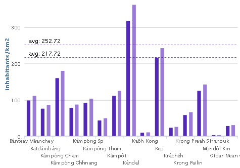
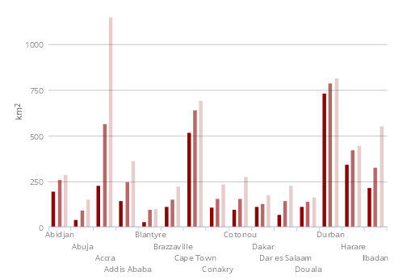
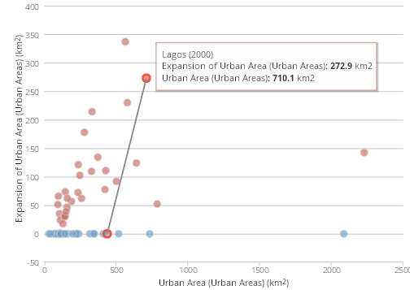
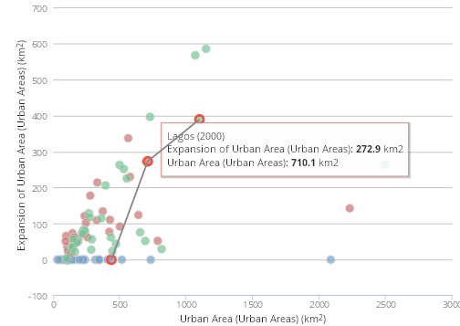
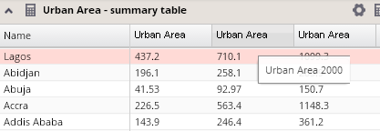

The application provides a possibility for comparison of values in charts, tables or map in two or more different years in the same time. The multiple year mode is activated by selecting both years in the year switcher, using the CTRL key when ticking the check boxes of each year.
This multiple-year mode is projected to charts and tables, where occur values for all selected years.
 
For a scatter chart in two years mode, line connecting points representing values in different years for one analytical unit appears on the mouse hover, which indicates both connected points and also shows the trend.

In the table, a column for each year appears, with the year description available by moving the mouse over the column header or each value.

There is also a possibility to view maps for two different years in the same time, provided via the multiple maps tool.